Hydra--分布式跟踪系统
开发hydra分布式跟踪系统的初衷
支撑互联网应用的各种服务通常都是用复杂大规模分布式集群来实现的。而这些互联网应用又构建在不同的软件模块集上，这些软件模块，有可能是由不同的团队开发、可能使用不同的编程语言来实现、有可能布在了几千台服务器，横跨多个不同的数据中心。因此，就需要一些可以帮助理解系统行为、用于分析性能问题的工具。
hydra分布式跟踪系统就为了解决以上这些问题而设计的。
理论依据
Google的论文《Dapper, a Large-Scale Distributed Systems Tracing Infrastructure》是我们设计开发的指导思想(原文和译文地址 https://github.com/bigbully/Dapper-translation)。Google针对自己的分布式跟踪系统Dapper在生产环境下运行两年多时间积累的经验，在论文中重点提到了分布式跟踪系统对业务系统的零侵入这个先天优势，并总结了大量的应用场景，还提及它的不足之处。我们通过对这篇论文的深入研究，并参考了Twitter同样依据这篇论文的scala实现Zipkin，结合京东自身的现有架构，我们认为分布式跟踪系统在京东内部是非常适合的，而且也是急需的。
领域模型
分布式跟踪的领域模型其实已经很成熟，早在1997年IBM就把ARM2.0(Application Response Measurement)作为一个公开的标准提供给了Open Group，无奈当时SOA的架构还未成熟，对业务的跟踪还需要直接嵌入到业务代码中，致使跟踪系统无法顺利推广。
如今互联网领域大多数后台服务都已经完成了SOA化，所以对业务的跟踪可以直接简化为对服务调用框架的跟踪，所以越来越多的跟踪系统也涌现出来。 在hydra系统中，我们使用的领域模型参考了Google的Dapper和Twitter的Zipkin(http://twitter.github.io/zipkin/)。
京东内部，尤其是我们部门有很多业务系统使用dubbo作为服务调用框，所以我们的分布式跟踪系统第一个接入组件就是dubbo。另一个原因也是因为我们团队对dubbo有着非常深入的理解，加之dubbo本身的架构本身十分适合扩展，作为服务调用框架而言，跟踪的效果会非常明显，比如Twitter的Zipkin也是植入到内部的Finagle服务调用框架上来进行跟踪的。
由于现阶段hydra主要接入了dubbo服务调用框架,所以在这必须了解dubbo的几个模型:
- Application:一类业务类型的服务，下面可能包含多个接口服务，可能出现多种类型业务跟踪链路。
- InterfaceService:接口服务，一个服务接口提供多种业务处理方法。
- Method:接口服务中具体处理业务的方法。
dubbo的结构入下图所示：

Hydra中跟踪数据模型:
- Trace:一次服务调用追踪链路。
- Span:追踪服务调基本结构，多span形成树形结构组合成一次Trace追踪记录。
- Annotation:在span中的标注点，记录整个span时间段内发生的事件。
- BinaryAnnotation:属于Annotation一种类型和普通Annotation区别，这键值对形式标注在span中发生的事件，和一些其他相关的信息。
Annotation在整个跟踪数据模型中最灵活的，灵活运用annotation基本能表达你所想到的跟踪场景。在hydra中(参考了zipkin)定义4种不同value的annotation用来表达记录span 4个最基本的事件。通过这4个annotation能计算出链路中业务消耗和网络消耗时间。

如图所示的应用场景对A服务的调用。A服务在被调用的过程中会继续调用服务B和服务C,而服务C被调用之后又会继续调用服务D和服务E。在我们的领域模型中，服务A被调用到调用完成的过程，就是一次trace。而每一个服务被调用并返回的过程（一去一回的箭头）为一个span。可以看到这个示例中包含5个span，client-A，A-B，A-C，C-D，C-E。span本身以树形结构展开，A-C是C-D和C-E的父span，而client-A是整个树形结构的root span。之后要提到的一个概念就是annotation，annotation代表在服务调用过程中发生的一些我们感兴趣的事情，如图所示C-E上标出来的那四个点，就是四个annotation，来记录事件时间戳，分别是C服务的cs（client send），E服务的ss（server receive）,E服务的ss（server send）, C服务的cr（client receive）。如果有一些自定义的annotation我们会把它作为BinaryAnnotation，其实就是一个k-v对，记录任何跟踪系统想记录的信息，比如服务调用中的异常信息，重要的业务信息等等。
Hydra中跟踪模型和dubbo模型之间关系:

如图所示的应用场景对A服务的调用。A服务在被调用的过程中会继续调用服务B和服务C,而服务C被调用之后又会继续调用服务D和服务E。在我们的领域模型中，服务A被调用到调用完成的过程，就是一次trace。而每一个服务被调用并返回的过程（一去一回的箭头）为一个span。可以看到这个示例中包含5个span，client-A，A-B，A-C，C-D，C-E。span本身以树形结构展开，A-C是C-D和C-E的父span，而client-A是整个树形结构的root span。之后要提到的一个概念就是annotation，annotation代表在服务调用过程中发生的一些我们感兴趣的事情，如图所示C-E上标出来的那四个点，就是四个annotation，来记录事件时间戳，分别是C服务的cs（client send），E服务的ss（server receive）,E服务的ss（server send）, C服务的cr（client receive）。如果有一些自定义的annotation我们会把它作为BinaryAnnotation，其实就是一个k-v对，记录任何跟踪系统想记录的信息，比如服务调用中的异常信息，重要的业务信息等等。
整体架构

对于分布式跟踪系统而言，必须对接入的基础组件进行改造，我们对dubbo的改造很简单，只是在过滤器链上增加一个过滤器，我们将其封装成一个hydra-dubbo的jar包，由dubbo直接依赖。
所有跟踪所需的通用性的API我们封装在hydra-client中，遍于接入各种组件。 hydra-manager用来完成每个服务的注册、采样率的调成、发送seed生成全局唯一的traceId等通用性的功能。所有hydra-manager数据统一用mysql进行存储。
我们使用hydra-collector和hydra-collector-service进行跟踪数据的异步存储，中间使用metaQ进行缓冲。
hydra-manager和hydra-collector使用dobbo提供服务。
考虑到数据量不大的情况，以及部署的复杂度。我们提供了两种更简便的架构
- 如果考虑到数据量没有那么大，可以不使用hbase，因为毕竟hadoop集群和hbase集群的部署和维护工作量很大。也就是hydra-collector-service使用mysql做存储。
- 如果并发量也不是很大的话，可以不使用消息中间件，在hydra-collector端直接进行数据落地，当然仍然是异步的。如图所示。
在使用mysql进行存储的时候我们并未进行分库分表，因为考虑到存储的是监控数据，时效性较高，而长期的监控数据的保留意义并不大。所以我们在主表上有明确的时间戳字段，使用者可以自行决定何时对保存的历史数据进行迁移

现有功能
当前hydra1.0版的功能并不多，主要有针对服务名、时间、服务调用响应时间、是否发生异常这几个条件进行查询。如下图所示：

这个界面的左侧为跟踪的查询条件，首先会根据服务的所属应用(相当于dubbo中的Application)筛选出应用的下的所有服务（相当于dubbo中的interface），以及服务调用发生的开始时间和所需要查询出来的服务数量。
我们针对一些敏感信息可以进行进一步的筛选，比如服务的调用时长（仅限根服务）和是否发生异常（可以覆盖根服务和子服务）。
对于每一次跟踪，我们可以进一步展示他的服务调用层级与响应时间的时序图。如下图所示：

我们参考Dapper中论述的场景，用绿色代表服务调用时间，浅蓝色代表网络耗时，另外如果服务调用抛出异常被hydra捕捉到的话，会用红色表示。鼠标移动到时序图中的每一个对象上，会Tip展现详细信息，包括服务名、方法名、调用时长、Endpoint、异常信息等。
Quick Start
部署简介
Hydra分布式跟踪系统可以跟踪环境的数据量大小选择上文所述的三种部署方式
- 高并发，大数据量：hydra-client | Queue | hbase
- 高并发，小数据量：hydra-client | Queue | mysql
- 低并发, 小数据量：hydra-client | mysql
因为是quick start，这里只介绍低并发和小数据量的情况。不过这里会详细介绍如何通过配置文件的修改来切换这三种部署方式。
硬件要求
- 1或多台业务系统集群机
- 1套zookeeper单点或集群机
- 1台机器部署Hydra-manager
- 1或多台机器部署Hydra-Collector
- 1台机器部署Hydra-web
- 1台数据库服务器
软件要求
- Dubbo:Hydra是基于alibaba的dubbo框架基准上做的服务跟踪系统，理论上原有的Dubbo框架服务群中所有应用不需要额外的配置，皆可以平滑的接入Hydra系统。
- Zookeeper:各个服务点依赖于zookeeper来读取Hydra-manager和Hydra-collector获取数据交互路由点，来完成跟踪数据的推送和跟踪的控制。
- Mysql:跟踪数据的持久化存储。
- Tomcat:前端web应用容器
源码获取
直接使用当前1.0的tag，为稳定版
测试环境部署
我们模拟了两个测试场景，均是基于dubbo服务调用
场景exp1:
A --> B --> C
即服务A调用服务B,服务B调用服务C。测试用例在modules/hydra-example/hydra-exmple-exp1/。熟悉dubbo的同学一定不会陌生。
场景exp2:
A --> B --> C1 --> E
--> C2 --> D1 --> C1 --> E
--> D2
场景2很复杂，基本涵盖了对同步调用跟踪的大多数可能遇到的场景。测试用例在modules/hydra-example/hydra-exmple-exp2/。
项目构建打包
maven项目不用多说。mvn clean install。不过不得不说的是，hydra项目中包含一些涉及数据库读写的单元测试(mysql，hbase），配置文件分别在
- modules/hydra-manager-db/src/test/resources/mysql.properties
- modules/hydra-store/hydra-mysql/src/test/resources/mysql.properties
- modules/hydra-store/hydra-hbase/src/test/resources/hbase-site.xml
- modules/hydra-store/hydra-hbase/src/test/resources/hydra-hbase-test.xml
mysql需要创建测试用数据库和测试用表，hbase需要创建测试用表
- docs/table-hbase/initTable
(hbase建表时可以根据hbase集群的具体情况调整域分区，涉及到table-mysql中对TB_PARA_SERVICE_ID_GEN初始化数据的设计) - docs/table-mysql
当然对于不需要使用hbase的同学也可以自行移除hbase module。
当然用maven构建跳过测试也是可以的。
安装部署
dubbo服务
Hydra默认使用了hydra-exmple中的两个应用场景来做，你可以在hydra-test/hydra-test-integration打包中获得应用场景。
获得tar.gz包或者zip包后，将服务分布式部署到不同的机器上，以模拟应用场景,一下介绍场景一的部署方法，场景二的部署方法类似。
hydra-test-intergration 分为windows版和linux版(默认)，见如下打包方法。
- 打包：linux: mvn package -Pruntime-env-linux
window: mvn package -Pruntime-env-windows - 部署: scp -r target/*.tar.gz username@ip:dirname
- 配置: cd basedir/conf
修改 *exp1.properties - 启动： cd basedir/bin
cd exp1
sh startA.sh
cd ..
sh startTrigger-exp1.sh start - 停止: cd basedir/bin
sh startTrigger-exp1.sh stop
All.sh stop - 输出: cd basedir/log
tail -f *.log
Hydra-client
hydra-client中包含hydra与dubbo的集成，以及hydra跟踪收集的相关功能。如果需要进行dubbo服务的跟踪，只需要把这个jar包放在dubbo服务的classpath下，就会自动开启跟踪功能！
Hydra-manager
- 部署：scp -r target/*.tar.gz username@ip:dirname
- 配置：cd basedir/conf
- 启动：cd basedir/bin
sh manager.sh start - 停止：cd basedir/bin
sh manager.sh stop - 输入：cd basedir/log
tail -f manager.log
Hydra-collector
- 部署：scp -r target/*.tar.gz username@ip:dirname
- 配置：cd basedir/conf
- 启动：cd basedir/bin
sh collector.sh start - 停止：cd basedir/bin
sh collector.sh stop - 输入：cd basedir/log
tail -f collector.log
Hydra-web
- 部署：scp -r target/*.war username@ip:$TOMCAT_WEBAPPS
部署举例：
以下演示安装样例：
- 部署zookeeper单点或集群环境，以保证获得最佳SOA，zookeeper的部署请参照官方文档。
- 部署实验场景exp1，只需要部署hydra-test-integration模块打包的tar.gz包，拷贝三份分布式部署。
- 部署一个触发器Trigger，以激活服务的调用。
- 部署一个Manager，以管理各个跟踪点的跟踪上下文。
- 部署一个或者多个Collector消费机集群，以搜集来自Hydra-client推送过来的跟踪数据。
- 部署一个web应用，已提供给前端展现应用系统服务上下文。
exp1场景说明：
有三个服务应用A、B、C和一个触发RPC调用的应用Trigger，服务调用关系为A-B-C， 每隔500s触发一个调用，持续时间为1天。
部署地址举例：
| 角色 | ip | port |
|---|---|---|
| ZK | 192.168.200.110-112 | 2181~ |
| A | 192.168.200.110 | 20990 |
| B | 192.168.200.111 | 20991 |
| C | 192.168.200.112 | 20992 |
| Trigger | 192.168.200.113 | - |
| Manager | 192.168.228.81 | 20890 |
| Collector | 192.168.228.81-82 | 20889 |
| Web | 192.168.228.81 | 8080 |
| MySql-DB | 192.168.228.81 | 3306 |
测试相关
测试说明
本测试针对Hydra-Client模块进行功能测试和压力测试，以便在Hydra开发的过程中及时发现重要bug和帮助优化Hydra系统性能。
本测试目前只针对Hydra-client的测试，重点关注业务系统接入Hydra和不接入Hydra前后性能影响，以保证Hydra系统接入端的低侵入性和稳定性。
针对Hydra-Client的测试，在部署上，只用部署应用场景（带Hydra_client）和Benchmark触发点，然后在应用Benchmark和应用场景上埋点分析Hydra性能。
部署环境
测试采用hydra-client | Queue | Hbase的部署方式。
实际测试部署，只需要部署应用场景（携带Hydra-client）和基准测试包，让跟踪数据和搜集器（hydra-collector）的网络链路断开，可以有效的分析出Hydra-client端的相关情况。
硬件环境
基准测试机器（适用于TPS分析参考）：
| IP | 192.168.227.48 |
|---|---|
| OS | [root@storm3 opt]# getconf LONG_BIT 64 [root@storm3 opt]# more /etc/redhat-release CentOS release 5.4 (Final) [root@storm3 opt]# uname -r 2.6.18-164.el5 |
| CPU | [root@storm3 opt]# more /proc/cpuinfo | grep "model name" model name : Intel(R) Xeon(R) CPU X5650 @ 2.67GHz model name : Intel(R) Xeon(R) CPU X5650 @ 2.67GHz model name : Intel(R) Xeon(R) CPU X5650 @ 2.67GHz model name : Intel(R) Xeon(R) CPU X5650 @ 2.67GHz |
| 内存 | [root@storm3 ~]# grep MemTotal /proc/meminfo MemTotal: 4044516 kB |
| 网卡 | [root@storm3 ~]# mii-tool -v eth0: negotiated 100baseTx-FD, link ok product info: vendor 00:50:43, model 2 rev 3 basic mode: autonegotiation enabled basic status: autonegotiation complete, link ok capabilities: 100baseTx-FD 100baseTx-HD 10baseT-FD 10baseT-HD advertising: 100baseTx-FD 100baseTx-HD 10baseT-FD 10baseT-HD link partner: 100baseTx-FD 100baseTx-HD 10baseT-FD 10baseT-HD [root@storm3 ~]# ethtool eth0 Settings for eth0: Supported ports: [ TP ] Supported link modes: 10baseT/Half 10baseT/Full 100baseT/Half 100baseT/Full 1000baseT/Full Supports auto-negotiation: Yes Advertised link modes: 10baseT/Half 10baseT/Full 100baseT/Half 100baseT/Full 1000baseT/Full Advertised auto-negotiation: Yes Speed: 1000Mb/s Duplex: Full Port: Twisted Pair PHYAD: 0 Transceiver: internal Auto-negotiation: on Supports Wake-on: d Wake-on: d Current message level: 0x00000007 (7) Link detected: yes |
软件环境
Hydra-client
| 属性 | 值 | 性质 |
|---|---|---|
| delayTime | 3000 | |
| flushSize | 10 | |
| queueSize | 1024 | 跟踪数据客户端缓冲池大小 |
应用场景
A-B-C分布式应用，基于Dubbo-2.4.8 RPC框架，使用默认配置。
启动参数： -Xms512m -Xmx512m -Xmn128m
测试内容
功能测试
| 分组 | 测试内容 | 测试场景 |
|---|---|---|
| 客户端 | 业务侵入性 | 业务接入Hydra和不接入Hydra影响差异 |
| 采样率问题 | 参照性能测试 | |
| 管理中心 | 全局信息注册 | 业务系统多次启动，管理中心反应情况 |
| 临时信息注册 | 业务系统开启调用后，管理中心反应情况 | |
| 数据搜集器 | 内容正确性 | 场景一/二 RPC调用的时候，搜集产生的跟踪数据，验证正确性 |
| 数据量正确性 | 场景一/二 RPC调用n次，搜集产生的跟踪数据，验证数据量正确性 |
具体功能测试点请参照“桩测试”清单:docs/test/Hydra-client功能测试清单.xls
性能测试
测试场景说明：
- 测试 业务系统接入Hydra前后TPS影响
- 测试 业务系统接入Hydra前后内存影响程度
- CPU影响程度，GC情况
- Thread情况
测试代码
工程模块
Hydra-test 分为三大模块
- Benchmark
提供基准测试包，其他模块依赖基准测试包和自己的业务逻辑代码，获取落地数据，根据落地数据和展现数据来验证Hydra系统的有效性。 - Integration
为整个hydra的集成测试，提供Hydra系统的Quick Start功能和实践验证Hydra系统。所有的安装和启动脚本理论上可以都在该模块完成，以供给后续的持续发布阶段。
Trigger代码示例
public class DemoRunnable extends AbstractClientRunnable {
public DemoRunnable(String targetIP, int targetPort,
int clientNums, int rpcTimeout, CyclicBarrier barrier,
CountDownLatch latch, long startTime, long endTime) {
super(targetIP, targetPort, clientNums, rpcTimeout, barrier, latch, startTime, endTime);
}
@Override
public Object invoke(ServiceFactory serviceFactory) {
InterfaceA rootService = (InterfaceA) serviceFactory.get(InterfaceA.class);
return rootService.functionA();
}
}
benchmark配置文件（demo）：
classname=com.jd.bdp.hydra.benchmark.demo.DemoRunnable
serverip=192.168.227.83
serverport=20990
concurrents=500
connectionnums=1
timeout=1000
runtime=600
场景说明
基于Dubbo框架的RPC的应用场景（应用场景一，可参照hydra-example-exp1），所有测试跑一分钟，测试在不同的并发量下，对比分析Hydra对业务系统的影响程度，为量化测试。
基于场景一，看JVM的内存影响程度，分析Hydra-Client占用业务系统多少额外内存，CUP活动情况，GC情况等，主要是看VisualVm生成的测试图形，验证Hydra对业务系统的侵入性是否在可控范围内，为泛化测试。
结果要求
以下为某次接入Hydra后的测试结果
----------Benchmark Statistics--------------
Concurrents: 100
ClientNums: 1
Runtime: 60 seconds
Benchmark Time: 21
Requests: 140867 Success: 100% (140867) Error: 0% (0)
Avg TPS: 4717 Max TPS: 5436 Min TPS: 3860
Avg RT: 21.154ms
RT <= 0: 0% 174/140867
RT (0,1]: 0% 467/140867
RT (1,5]: 4% 5690/140867
RT (5,10]: 22% 31501/140867
RT (10,50]: 68% 96389/140867
RT (50,100]: 3% 5541/140867
RT (100,500]: 0% 1105/140867
RT (500,1000]: 0% 0/140867
RT > 1000: 0% 0/140867
测试结果
TPS性能损耗
场景一
参数：1并发| 接Hydra前 | 接Hydra后 | 性损率 | |
|---|---|---|---|
| Avg-TPS | 803 | 753 | 6.2% |
| Avg-RT(ms) | 1.24 | 1.323 |
场景二
参数：10并发| 接Hydra前 | 接Hydra后 | 性损率 | |
|---|---|---|---|
| Avg-TPS | 2268 | 2163 | 4.6% |
| Avg-RT(ms) | 4.407 | 4.621 |
场景三
参数：20并发| 接Hydra前 | 接Hydra后 | 性损率 | |
|---|---|---|---|
| Avg-TPS | 2991 | 2889 | 3.4% |
| Avg-RT(ms) | 6.682 | 6.911 |
场景四
参数：50并发| 接Hydra前 | 接Hydra后 | 性损率 | |
|---|---|---|---|
| Avg-TPS | 4077 | 4030 | 2.1% |
| Avg-RT(ms) | 12.238 | 12.401 |
场景五
参数：100并发| 接Hydra前 | 接Hydra后 | 性损率 | |
|---|---|---|---|
| Avg-TPS | 4832 | 4717 | 2.4% |
| Avg-RT(ms) | 20.699 | 21.154 |
说明：
以下测试场景是基于Benchmark测试场景2的环境基准上（20并发），对服务A进行埋点分析，得出的VisulalVM分析图。
为了使A构成单点压力环境，同时便于VisualVM分析，将Benchmark和A部署在本机，B和C部署在远程机上。
内存情况
接入跟踪前
堆栈情况
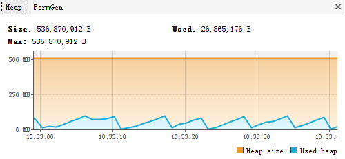 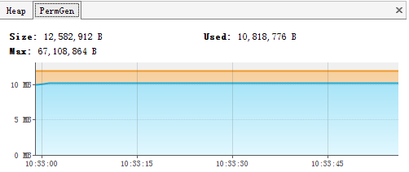Sample情况
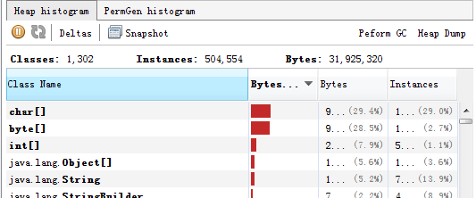 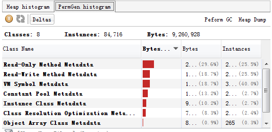新生代情况
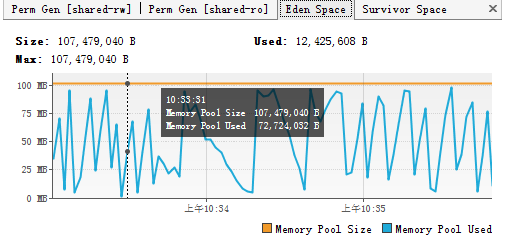 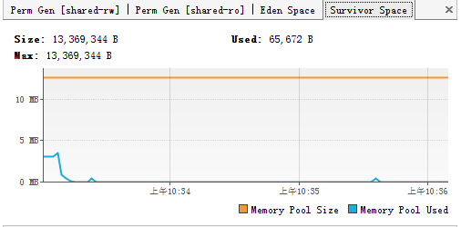接入跟踪后
堆栈情况
 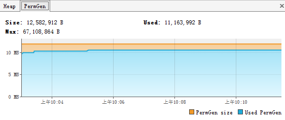
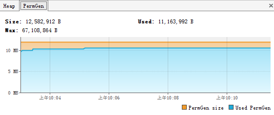
Sample情况
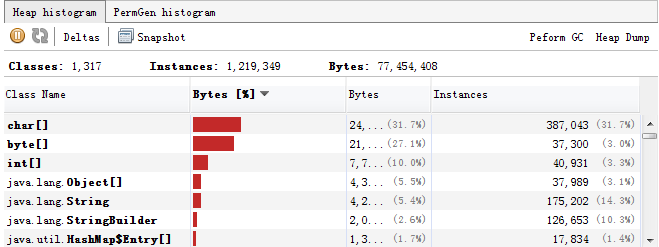 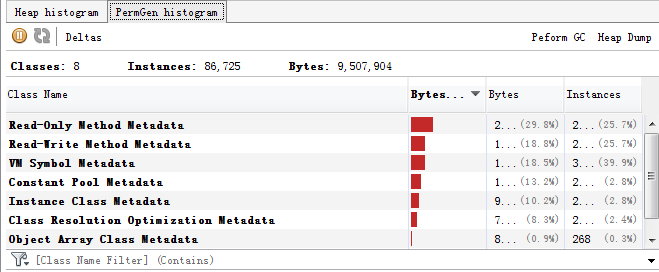新生代情况
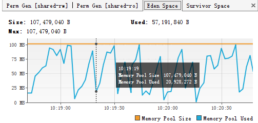 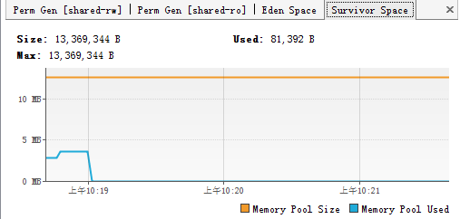GC情况
接入跟踪前
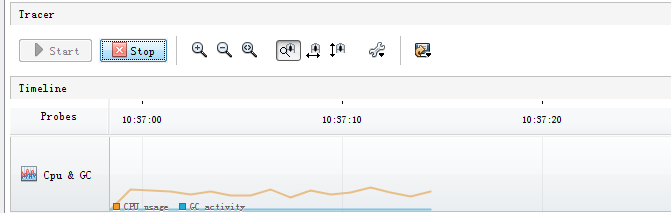接入跟踪后
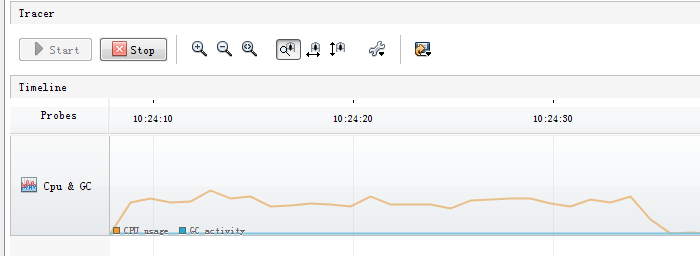CPU情况
接入跟踪前
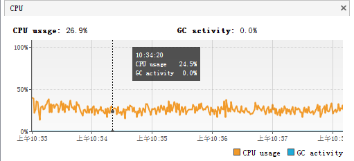
接入跟踪后
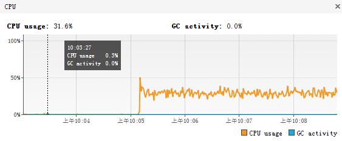 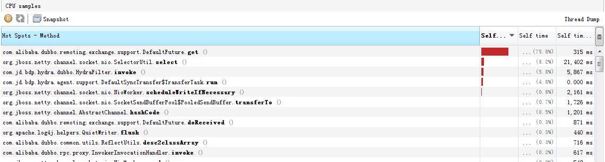Thread情况
接入跟踪前
 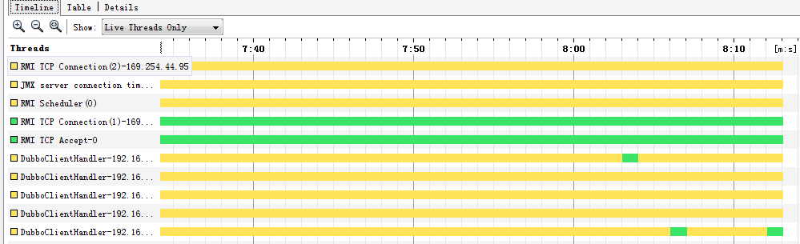
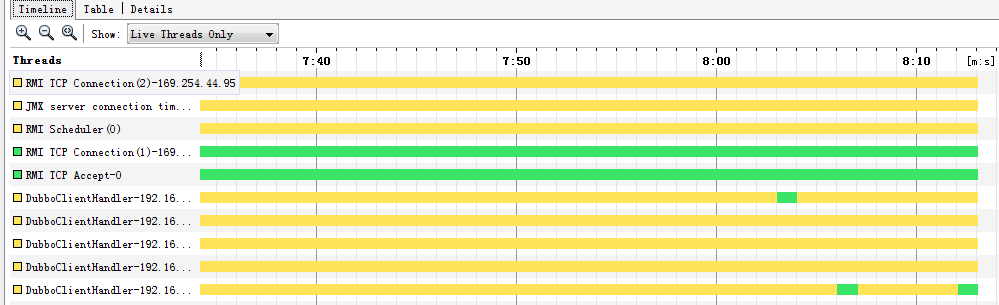
接入跟踪后
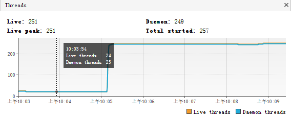 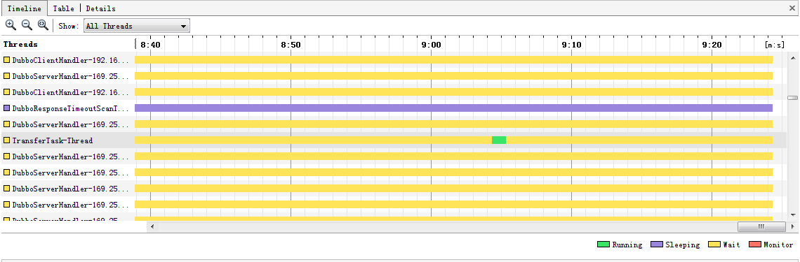总结
业务系统在接入Hydra系统前后，对自身的TPS影响程度很低。1-100并发的服务调用情况下，性损率都在10%以内。
实际上，本测试依赖于Dubbo服务框架以及构建的业务场景很简单（无大对象的序列化、网络IO消耗和复杂计算），性能较真实情况好，也在一定程度上放大了Hydra的影响程度。也就是说，测试结果的TPS性损率会远比真实情况TPS低得多。
以下是VisulmVM分析图得出的分析结果：
| 分析参数 | 新增影响及影响程度 | 备注 |
|---|---|---|
| Memory（HP） | 无明显影响 | 理论上不会存在因Hydra-Client导致的内存溢出问题 |
| CPU | HydraFilter.invole 和DefaultSyncTransfer$ TransferTask.run 方法占用约10%的self-cpu时间。 | 可接受范围 |
| GC | 无明显影响 | 无大对象的频繁申请活动 |
| Thread | 多出了3个线程，TransferTask-Thread 比较频繁，约10s*1active | 可接受范围 |
后续版本
1.1版本正在进行紧张的开发中
内容包括
- 系统首页（当天的跟踪统计数据：duration-time，count-time两个维度的曲线图，应用下所有服务的调用拓扑图）
- 访问权限
- hydra-client API提炼
- 采样率的手动设置
- 。
- 。
- 。